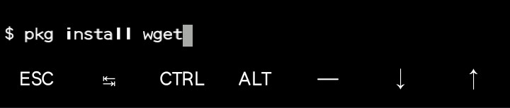

Dragon is an innovative and practical general-purpose, multi-paradigm scripting language. It supports multiple programming paradigms such as imperative, object-oriented, functional, natural programming, and declarative programming using nested structures. The language is portable (Windows, Linux, Mac OS X, Android, etc.) and can be used to create console and GUI applications. The language is designed to be simple, small, flexible, and fast. It's a dynamically- and weakly-typed language that interprets the source code through the JVM or LLVM. The language was also made to be a scripting language and server side programming. The first version of the language was released on January 4th, 2018. The language was influence by Lua, Python, Java, Ruby, QML.
Termux is an Android terminal emulator and Linux environment app that works directly with no rooting or setup required. A minimal base system is installed automatically - additional packages are available using the APT package manager. Termux allows you to run Dragon programs and outputs it programs, this way thus made Dragon more accessible to any platform and compatible with Android to run and execute codes. Though GUI applications cannot be developed or built with Termux as it only allows you to code and run Dragon codes.
UserLAnd is a free, open-source tool that enables you to install and manage Linux applications on your Android device like you would a native app and to also run full Linux distributions e.g. Ubuntu, Kali Linux, Debian, Etc. With Userland, you can develop/built GUI applications using dragon programming language.
Type this following commands to install Dragon in termux:
>_ pkg install wget After you must have successfully installed Dragon in termux. It required of you to know how to make use of it such as like: Creating program, running your program. To do this, you need to install Nano. Nano is an inbuilt editor that was made in termux used for creating program files, and running output. Just like any text editor or IDE for a language. To install nano, run this following commands in termux:
>_ pkg install nanoNano has been installed successfully, to open nano editor and create a new file, type:
>_ nano yourfilename.dgnThe editor will open up with the name of the new file you created at the top of the editor, type your program. We will type a simple hello world program in nano after the editor has shown up (note that Dragon uses the .dgn file extension) Type: showln "Hello World" and press CTRL + O, an input form will show up, you can save your file with any name in as much as it ends with .dgn file extension and press enter
The page will be regularly updated soon as expected and details will be given on how to install Dragon in userland for creating GUI applications.
To install and use dragon programming language to develop GUI applications in Userland:
* Download Userland from play store or any other apk stores
* Install and open Userland and then install Ubuntu distribution in Userland
* Select VNC Type in Ubuntu
* Install JDK in Ubuntu
* Install Dragon
Now you're done installing dragon in UserLand, and can fully use and develop GUI applications fully in dragon